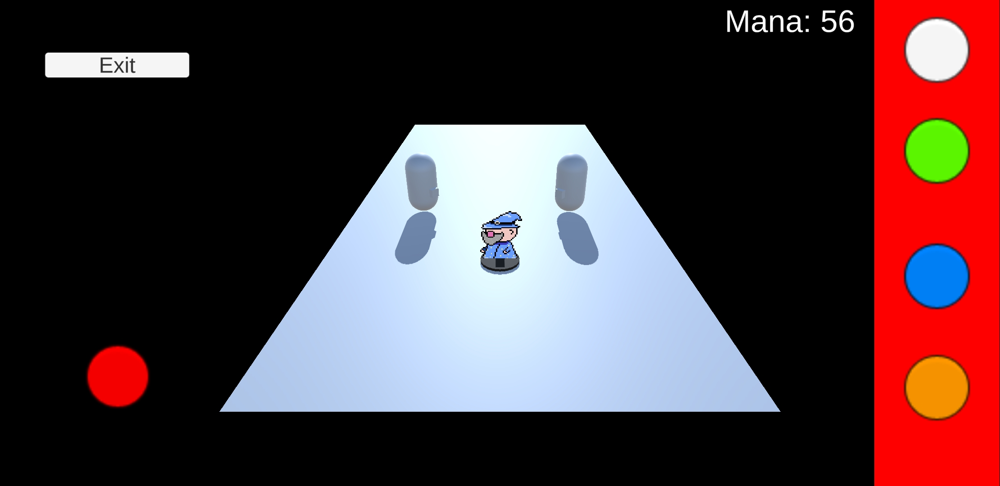

WarpJam
Warpjam Or: A Tiny Wizard's Trans-Dimensional Quest To Save The Multiverse is a top down bullet hell made in Unity for Android. The game uses NFC chips to load in level data, with the chips being scattered around a venue in the form of posters. The player would tap their phone on the posters to get the data and play the level. The idea is that it would encourage the player to explore the venue and see all there is to see in a unique way.
The inspiration for this game came from 2 places. The first place is obviously the NFC Toys-to-Life bubble that existed from roughly 2011-2017. I personally played these games a lot when I was a kid, being one of the few types of games me and my siblings all played. These games have fall out of popularity largely due to oversaturation and the cost to play them (as most of the time you needed specialised figures and portals). By using Android phones’ already available NFC hardware, there is no need to expensive portals and by using posters there is no need to spend £10+ on an expensive figure to experience the magic of a real-life object effecting the game. The 2nd inspiration comes from when me the rest of Hell Inc had a stall in the Falmouth University Games Expo 2024. Since Corpo Hell is a VR game (the only one made by 2nd year students) we were put in the corner of a room away from the other 2nd year games. This meant we had less traffic than what we would have had if were with the other games. If set up at the expo, this game would encourage the people to explore more in a fun and interactive way and would have helped more people come to the other booths.
Since this is a game made by me, there is no way the game would be just a top-down-shooter. The game has a unique spell crafting feature where the player can use different components collected by beating levels to craft new bullets. For example, by using lost of “move” components, the player could make a long-range attack. Equally, the player could use a mixture of “split” and “explode” components to make a close-range shotgun blast. I wanted to have a reward for the player when they completed a level, but not one that was meaningless but also considered the fact the player could play any level in any order. After doing some research, I liked the approach the Mega Man games came to with its robot masters and unlocking a new gun at the end of each level and so adapted it for this game. The main difference being that the player has more creativity with the modules than with the guns, since I want the player to have a deeper connection with the wizard.